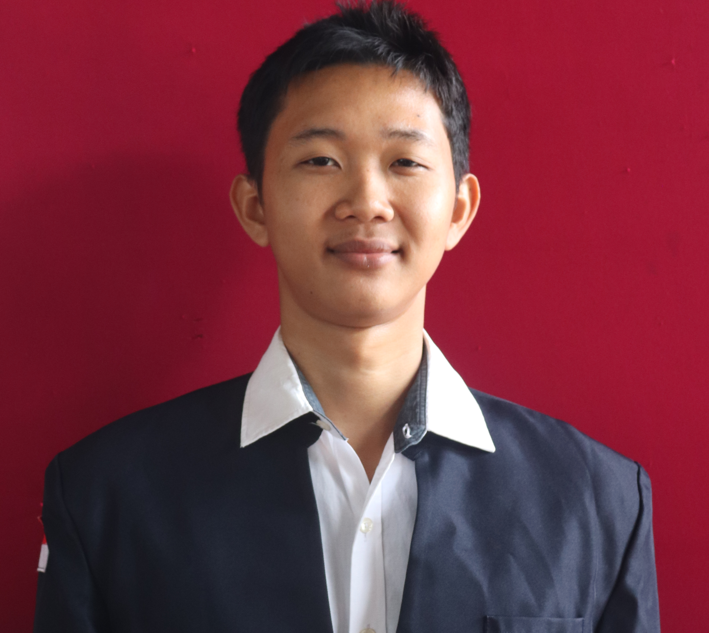
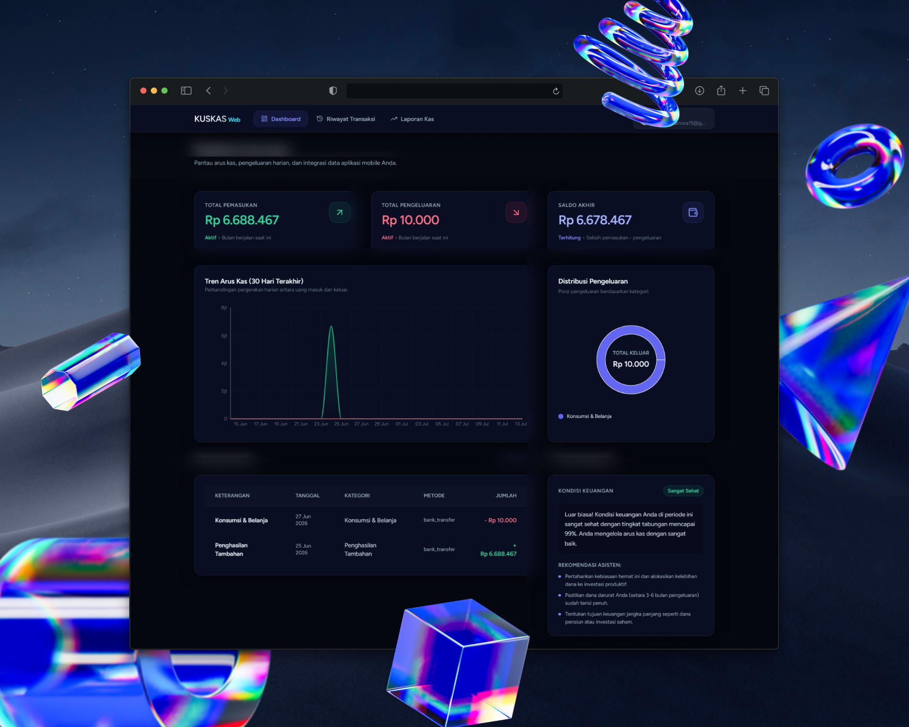

Mahasiswa Aktif S1 Sistem Informasi • Terbuka untuk Kolaborasi
Halo, saya Boy Harendy Simamora
Mahasiswa Sistem Informasi • Spesialisasi Full-Stack Web, Data Analytics & Accessible UI
Saya mahasiswa Program Studi Sistem Informasi di Institut Teknologi Del dengan ketertarikan mendalam pada pengembangan web modern, arsitektur backend, analisis data, dan kecerdasan buatan. Berdedikasi merancang antarmuka pengguna yang responsif, berkinerja tinggi, dan patuh pada standar aksesibilitas digital WCAG 2.2 Level AA dengan arsitektur kode semantik yang bersih, rapi, dan mudah dirawat.
Back-End & Bahasa Pemrograman: Java, C, Python, Dart/Flutter, arsitektur Serverless, dan perancangan REST API.
Basis Data & Layanan Cloud: MySQL / SQL Relasional, Supabase, Firebase, dan optimasi pemodelan query data.
Alat, Kualitas & Standar: Git Version Control, GitHub Pages / Vercel, Aksesibilitas WCAG 2.2 AA, dan W3C Validation.
Tahapan Standar Pengerjaan Proyek:
Analisis Kebutuhan & Pemodelan Sistem: Mengkaji PRD, spesifikasi bisnis, persona pengguna, dan kriteria aksesibilitas digital.
Perancangan Arsitektur & Antarmuka: Menyusun semantic outline, wireframe responsif mobile-first, dan relasi data terstruktur.
Implementasi Kode Semantik Murni: Menulis HTML5 semantik dan CSS3 modern tanpa ketergantungan framework berlebih.
Audit Aksesibilitas & Pengujian Lintas Perangkat: Verifikasi rasio kontras warna, navigasi keyboard penuh, dan validasi standar W3C.
Penerapan & Dokumentasi Komprehensif: Rilis publik via GitHub Pages / Vercel dilengkapi dokumentasi pemeliharaan yang jelas.

Boy Harendy SimamoraNIM: 12S24016 • Institut Teknologi Del
Program Studi
S1 Sistem Informasi
Institusi
Institut Teknologi Del
Mata Kuliah
Pemrograman Praktikum Web (PPW)
Lokasi
Pandan • Laguboti, Sumatera Utara
Karya & Implementasi Nyata
Galeri Portofolio Proyek Terpilih
Kumpulan aplikasi web dan ekosistem digital nyata yang dibangun dengan standar kode semantik, performa tinggi, serta kepatuhan pada aksesibilitas web dan kepuasan pengguna.

Web & Mobile Ecosystem
KUSKAS — Keuangan Sakti Kas
Ekosistem pencatatan keuangan pribadi cerdas yang terdiri dari aplikasi Android dan web admin panel. Memecahkan tantangan pencatatan manual melalui voice recording dengan kategorisasi otomatis Gemini AI, fitur QR Code login, dan sinkronisasi real-time Supabase.
Flutter & DartLaravel & ReactSupabase RealtimeGemini AI
Platform mesin pencari cerdas dan agregator kepercayaan toko daring. Mengotomatisasi pengumpulan data, perbandingan harga produk, serta evaluasi tingkat reputasi penjual dari berbagai marketplace besar melalui arsitektur scraping data yang efisien.
Aplikasi cuaca interaktif dengan estetika Glassmorphism modern dan latar belakang dinamis yang beradaptasi dengan kondisi cuaca secara real-time. Menyajikan prakiraan cuaca per jam dan 5 hari ke depan secara presisi serta mendukung dwibahasa.
JavaScript / ReactGlassmorphism CSSOpenWeather APIWCAG 2.2 AA
Penyajian data tabular semantik yang memuat riwayat matakuliah inti Program Studi S1 Sistem Informasi di Institut Teknologi Del, bobot SKS, capaian nilai, dan kompetensi teknis yang dikuasai.
Daftar Riwayat Akademik Matakuliah dan Capaian Kompetensi Boy Harendy Simamora di S1 Sistem Informasi Institut Teknologi Del
Nama Matakuliah & Proyek
Semester & Periode
Bobot SKS
Nilai / Status
Catatan Teknis & Hasil Capaian
Pemrograman Berorientasi Objek (PBO / Java)
4 SKS
Nilai A (4.00)
Penguasaan konsep OOP Java fundamental: enkapsulasi, pewarisan, polimorfisme, dan arsitektur aplikasi modular.
Struktur Data & Algoritma Pemrograman (C / Python)
3 SKS
Nilai A (3.90)
Implementasi struktur data dinamis, algoritma pencarian dan traversal, efisiensi memori, serta analisis Big-O.
Analisis & Perancangan Sistem Informasi (APSI)
3 SKS
Nilai A (4.00)
Penyusunan PRD, pemodelan alur bisnis (BPMN), diagram UML, use case komprehensif, dan metodologi Agile.
Pemrograman Berbasis Web & Antarmuka Interaktif
3 SKS
Nilai A (4.00)
Pengembangan antarmuka web modern dengan React/JS, HTML5 semantik, CSS responsif, dan integrasi API publik.
Pemrograman Praktikum Web (PPW)
2 SKS
Sedang Berjalan
Tugas mandiri: Portofolio Web & Layanan Interaktif Accessible murni tanpa framework sesuai standar WCAG 2.2 AA.
Akumulasi Kredit & Rata-rata Capaian
19 SKS (Inti SI)
IPK: 3.95 / 4.00
Status: Sangat Memuaskan (Cum Laude Track)
Kolaborasi & Konsultasi
Formulir Pemesanan Layanan & Kerja Sama
Silakan lengkapi formulir resmi di bawah ini untuk mengajukan konsultasi teknis, pembuatan antarmuka web, audit aksesibilitas, maupun perancangan solusi sistem informasi.